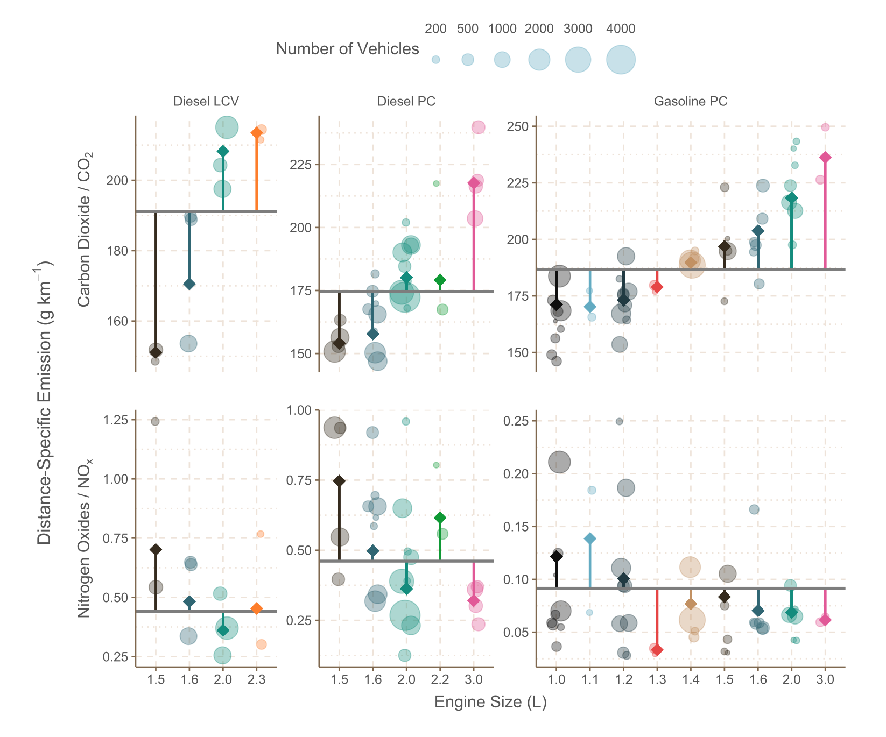
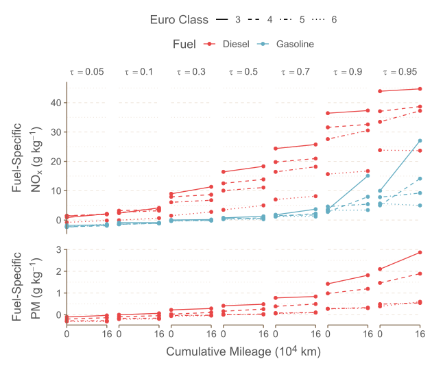

Research
PhD research into the remote sensing of vehicle emissions.
My PhD thesis (Davison 2022) focused on the calculation of representative emission factors from vehicle emission remote sensing data. An emission factor is a value used to estimate a total emission from a sector (e.g., transport) from a more measurable activity (e.g., total kilometres driven).
\(Emission~Estimate~\left(g\right) = \textbf{Emission~Factor}~\left(g~km^{-1}\right) \times Measured~Activity~\left(km\right)\)
Typically these emission factors are based on data from a very limited range of vehicles, most commonly from lab tests but also from instrumented vehicles (Portable Emissions Monitoring Systems, PEMS). While these give good journey coverage, capturing everything from idling to bombing down the motorway, they give poor fleet coverage, only measuring a handful of “representative” vehicles.
Vehicle emission remote sensing is a technique for measuring a lot of vehicles. Think of it as a bit like a speed camera with a spectrometer attached, that being an instrument capable of measuring pollutant concentrations in the atmosphere. While the use of remote sensing rapidly populates a database of hundreds of thousands of tailpipe concentration measurements, only measuring a dispersing plume (rather than the sum total of all tailpipe emissions) means some robust statistical modelling is required to calculate representative emission factors.
One of the key outcomes from my research was the clear significance of the difference in emissions between vehicle manufacturers. Figure 1, taken from Davison et al. (2021), illustrates the distribution of different distance-specific emissions for different vehicle manufacturers and engine sizes. These differences are currently not directly accounted for in European emissions inventories.

I also used statistical modelling techniques to examine other effects on vehicle emission concentrations. For example, quantile regression (via the {quantreg} package) was used to examine the skewed relationships between cumulative mileage and fuel-specific emissions in passenger cars. Figure 2, taken from Davison et al. (2022), shows that there are a small proportion of high-mileage gasoline Euro 3 passenger cars which are higher emitting than the average Euro 5/6 diesel cars.

Academic Publications
Publications I was involved in throughout my PhD are detailed below. The majority of these, not least my thesis (Davison 2022), are open source and therefore free to read for those outside of academia.